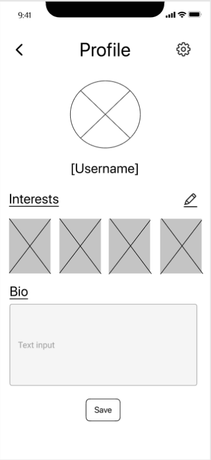
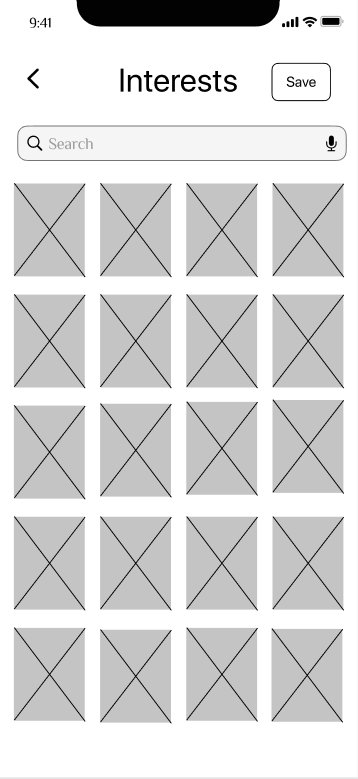
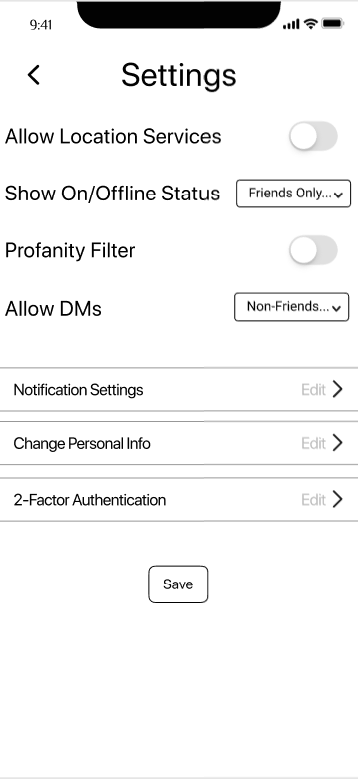
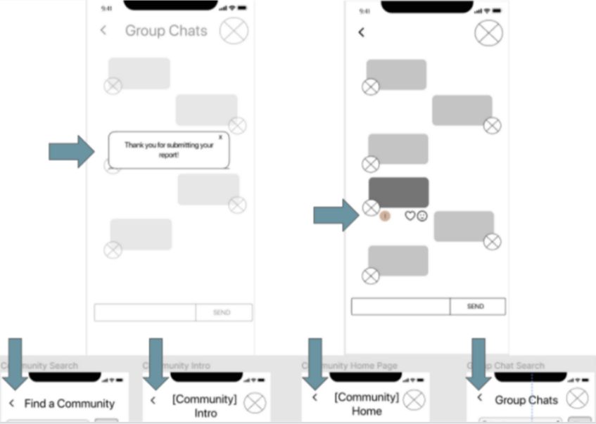

An app designed to connect geeks through common interests - with a focus on community, safety and customization.
TIMELINE
2 Weeks, from research to low-fidelity prototype.
GOAL
Along with my two teammates, I created a prototype for an app centered around community and shared interests, with a focus on customization and safety.
MY ROLE & RESPONSIBILITIES

We started with a dating app specifically for geeks, but through our research found that wasn't actually the main interest of most of our users. As such, we switched gears to a community/fandom sharing app.


For our research, I planned and conducted 2 of our 5 interviews. I also built a Google Survey and analyzed both direct and indirect competitors. From our research, we created the persona of Valkyrie Lucas, a streamer interested in meeting people who share her interests.


Based on our research and our persona, we landed on three key features:
Privacy/Moderation
-
Variety of Categories and Features
-
Robust Customization and Personalization

I drafted up a user insight statement, that led into our problem statement:

Now we're ready to move on to our user flow

For the sake of time, we decided to focus on the specific task flow of joining a community.

While wireframing, I added a frame showing the user selecting a chat, in order to show more functionality.
Through the course of prototyping, our team opted to show the process of joining a group chat, and reporting a message, as well as options to personalize their profile and change settings. This allowed us to showcase even more of the focus on customization/personalization and safety.
  I was personally responsible for building out the profile and settings in the prototype.

Our testing process was a little unconventional: as we tested the prototype, we iterated on simple changes between each test. Each of the green sticky notes above was a testing insight we iterated on before the next test.

Now it's your turn.
Put yourself in Valkyrie's shoes...
You downloaded the app yesterday and created an account. Today, you've decided to join a community and enter a group chat.
Once in the chat, you see a message that doesn't match the community guidelines, and opt to report it.
Don't worry, this low-fi prototype will only let you select the options you actually need.